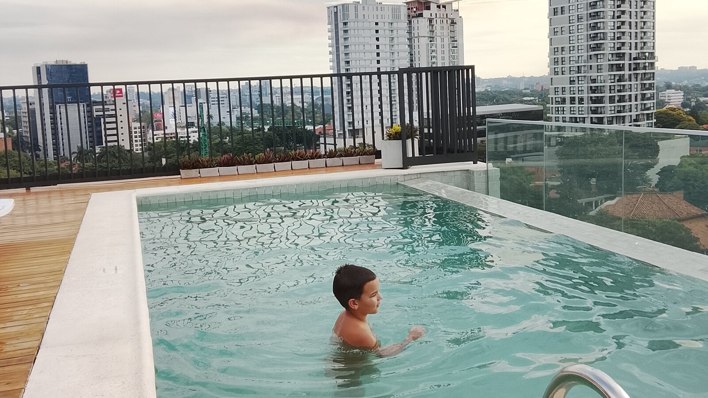

Why Adult Autism Services Cannot Focus Only on Employment
A job can be meaningful, but it is one part of an adult life—not the measure of whether that life has value.

When people talk about services for autistic adults, employment often becomes the headline. Will the person get a job? How many hours will they work? Will they earn a paycheck?
Those questions matter. Autistic adults and adults with intellectual disabilities should have access to fair, integrated employment, real wages, accommodations, and support when work is something they want. But employment cannot carry the full weight of adulthood.
A complete service system must also help a person stay healthy, communicate, travel safely, maintain relationships, participate in the community, enjoy recreation, manage daily routines, rest, and live in a home where they are known. A job may strengthen that life. It cannot substitute for it.
Employment is an opportunity to support—not a test a person must pass to deserve a full life.
Employment is a right, not the only outcome
The U.S. Department of Labor describes competitive integrated employment as full- or part-time work for at least minimum wage, with comparable pay and benefits, in a setting where employees with disabilities interact with people without disabilities. That standard matters because disabled people have too often been separated, underestimated, or paid unfairly.
For some people, supported or customized employment can uncover a good match between strengths, interests, support needs, and an employer’s real needs. Services should not assume that significant disability rules work out.
But they should not make the opposite mistake either: treating a conventional job as the organizing purpose of every person’s week. A person may want a job but need years of preparation. They may work a few hours and need support during the rest of the week. Health, communication, sensory needs, behavior, transportation, or fatigue may limit work. The response should be better support and broader opportunity—not an empty life.
The rest of life does not happen after work
Most adults are more than workers. We are relatives, friends, neighbors, diners, travelers, worshippers, learners, patients, customers, hobbyists, and members of communities. Disabled adults deserve that same breadth.
Home- and community-based services are meant to provide opportunities not only to seek competitive work but also to engage in community life. The United Nations disability convention likewise addresses community inclusion, work, and recreation as distinct areas of life.
A program can help someone complete job tasks while failing to help them maintain a friendship. It can track attendance while ignoring an untreated health problem. It can teach workplace compliance while offering no transportation to a park, church, store, or family visit. If only paid hours count, essential support becomes invisible.
A weekend in Asunción is part of the point
The photograph with this article was taken at a rooftop pool in Asunción. We had given a friend a weekend away, and all of us split an Airbnb together. Sam came too.
He was not practicing a vocational skill. He was enjoying the water, being with people, traveling, and sharing an ordinary experience with friends. That is not time left over after the important part of life. It is life.
Recreation can support physical health and sensory regulation. Travel can expand familiarity and confidence. Friendship builds continuity and mutual knowledge. Fun gives a person something to anticipate and remember.
Employment-only planning creates blind spots
When services are organized almost entirely around work, families may still be left to solve transportation, supervision, medical appointments, communication support, meals, evenings, weekends, and social connection. A person who loses a job can suddenly lose routine and relationships at the same time.
Good planning asks several questions at once: What kind of work could fit? What support would make it possible? What else gives the week meaning? What keeps this person healthy and safe? Who knows them well? What happens when work changes?
A strong plan may include supported employment, but it should also address communication, health, transportation, household participation, relationships, community life, recreation, sensory needs, choice, privacy, and reliable support. This is why independence should not be the only goal.
What you can do this week
Map the whole week
Write down where the person goes, who they see, what they choose, and what they enjoy across seven days. Include evenings and weekends.
Add one nonwork goal
Choose a goal connected to friendship, recreation, health, transportation, community participation, or home life.
Ask what support makes opportunity possible
If the person is not participating, look beyond motivation. Is transportation missing? Is the environment overwhelming? Are communication, personal care, supervision, or recovery time needed?
Long-term questions to consider
- If employment ends, what routines and relationships remain?
- Can the person pursue recreation, worship, travel, and friendship?
- Are health, communication, sensory, and safety needs addressed?
- Does paid work reflect preferences and provide fair conditions?
- Will support adapt as the person ages?
Casa de SAM’s position: build the life, not only the résumé
Casa de SAM supports access to meaningful, fairly compensated work. We also believe a resident’s place in the community can never depend on employability.
Our vision includes homes, dependable support, ordinary relationships, community participation, recreation, personal preferences, and opportunities to contribute. The measure is whether each person is safe, known, respected, connected, and able to experience things that matter to them.
Sources and further reading
- U.S. Department of Labor: Competitive Integrated Employment
- U.S. Department of Labor: Customized Employment
- 42 CFR § 441.301: Home and Community-Based Services requirements
- United Nations: Convention on the Rights of Persons with Disabilities
About Casa de SAM
Casa de SAM is a developing vision for a lifelong residential community in Paraguay for adults with autism and other developmental disabilities who need substantial daily support. The project is being designed around safety, flexible daily rhythms, meaningful choice, relationships, and belonging that does not have to be earned through productivity or independence.
Casa de SAM is not yet an operating nonprofit or residential provider. We are currently researching, documenting the vision, and looking for people who may eventually help build it responsibly.
This article provides general educational information and describes Casa de SAM’s developing philosophy. It is not individualized medical, therapeutic, vocational, legal, religious, or program-placement advice.